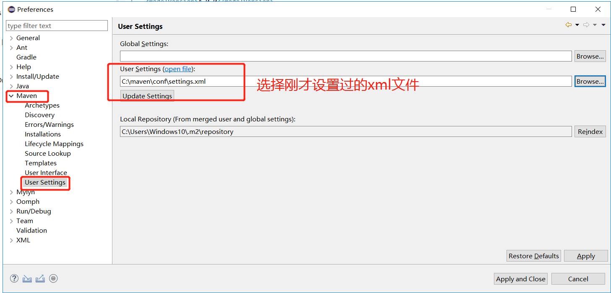
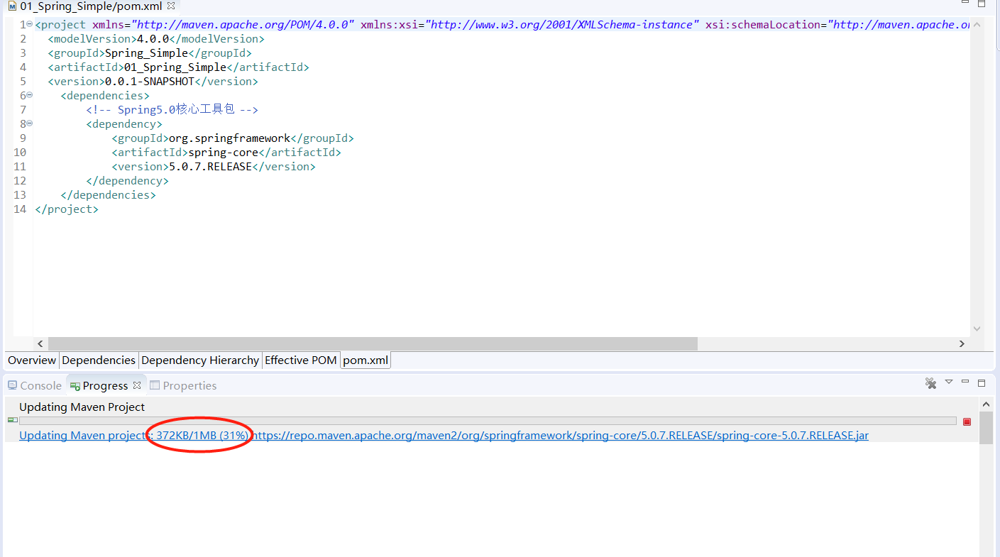

因为Maven 默认仓库的服务器在国外所以我们国内的使用效果极差，我们可以修改成为国内镜像地址加速下载。
C:\Users\您电脑帐号\ .m2\settings.xml
没有文件的下载附件里面
修改Maven安装目录下/conf/settings.xml文件
找到<mirrors></mirrors>在这里面 加入国内镜像源·华为云和阿里云提供的镜像
注：您要是觉得手动配置节点麻烦的，请直接下载，覆盖相应路径文件即可：直接下载
<mirror>
<id>HuaweiCloud</id>
<mirrorOf>*,!HuaweiCloudSDK</mirrorOf>
<url>https://mirrors.huaweicloud.com/repository/maven/</url>
</mirror>
<mirror>
<id>AliYUN</id>
<name>AliYUN Maven</name>
<mirrorOf>*,!HuaweiCloudSDK</mirrorOf>
<url>http://maven.aliyun.com/nexus/content/groups/public/</url>
</mirror>在profiles节点中添加如下内容：
1 <profile>
2 <id>HWSDK</id>
3 <repositories>
4 <repository>
5 <id>HuaweiCloudSDK</id>
6 <url>https://mirrors.huaweicloud.com/repository/maven/huaweicloudsdk/</url>
7 <releases>
8 <enabled>true</enabled>
9 </releases>
10 <snapshots>
11 <enabled>false</enabled>
12 </snapshots>
13 </repository>
14 </repositories>
15 <pluginRepositories>
16 <pluginRepository>
17 <id>HuaweiCloudSDK</id>
18 <url>https://mirrors.huaweicloud.com/repository/maven/huaweicloudsdk/</url>
19 <releases>
20 <enabled>true</enabled>
21 </releases>
22 <snapshots>
23 <enabled>false</enabled>
24 </snapshots>
25 </pluginRepository>
26 </pluginRepositories>
27 </profile>增加activeProfiles标签激活配置：
1 <activeProfiles>
2 <activeProfile>HWSDK</activeProfile>
3 </activeProfiles>然后在Idea 等工具指定使用你设置好的配置文件

效果
